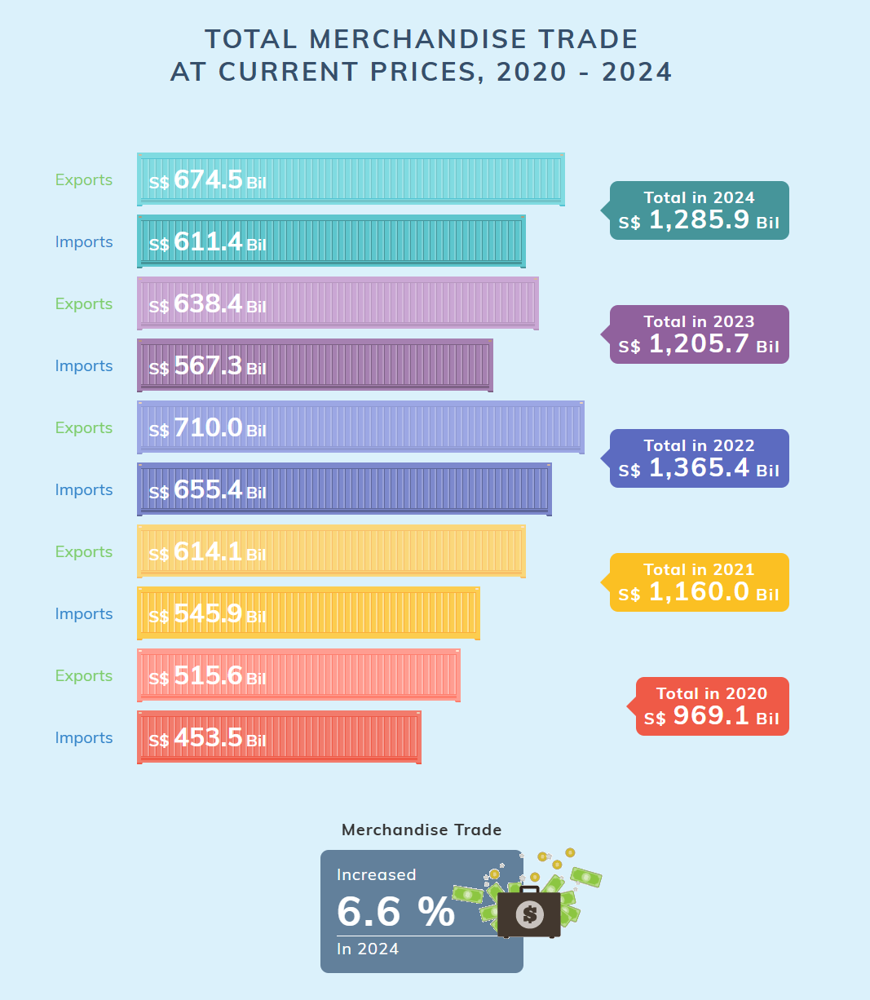
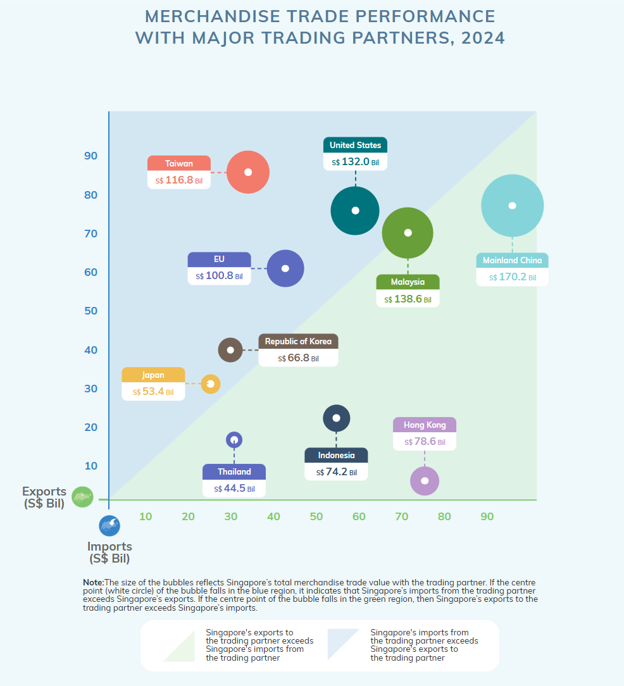
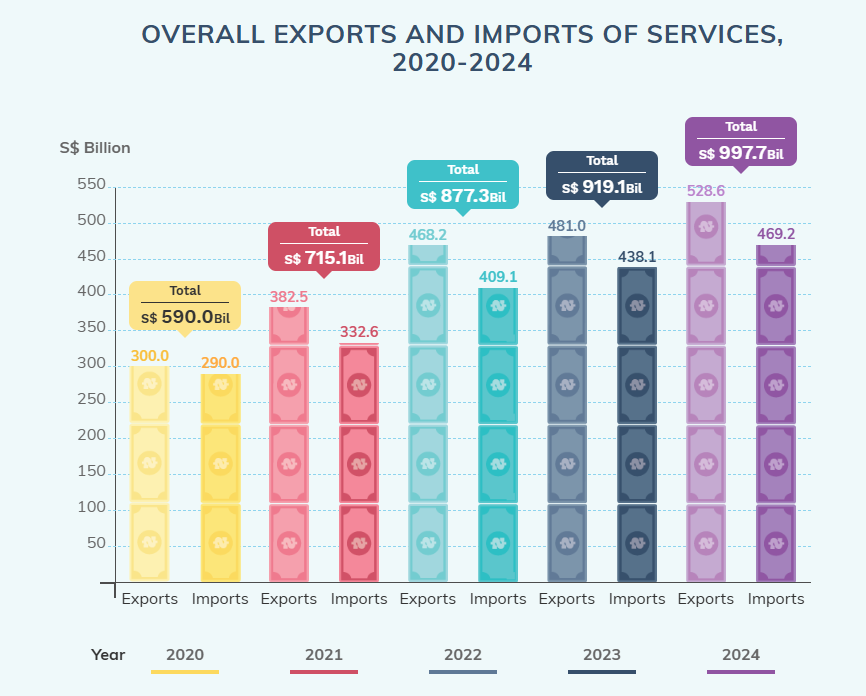
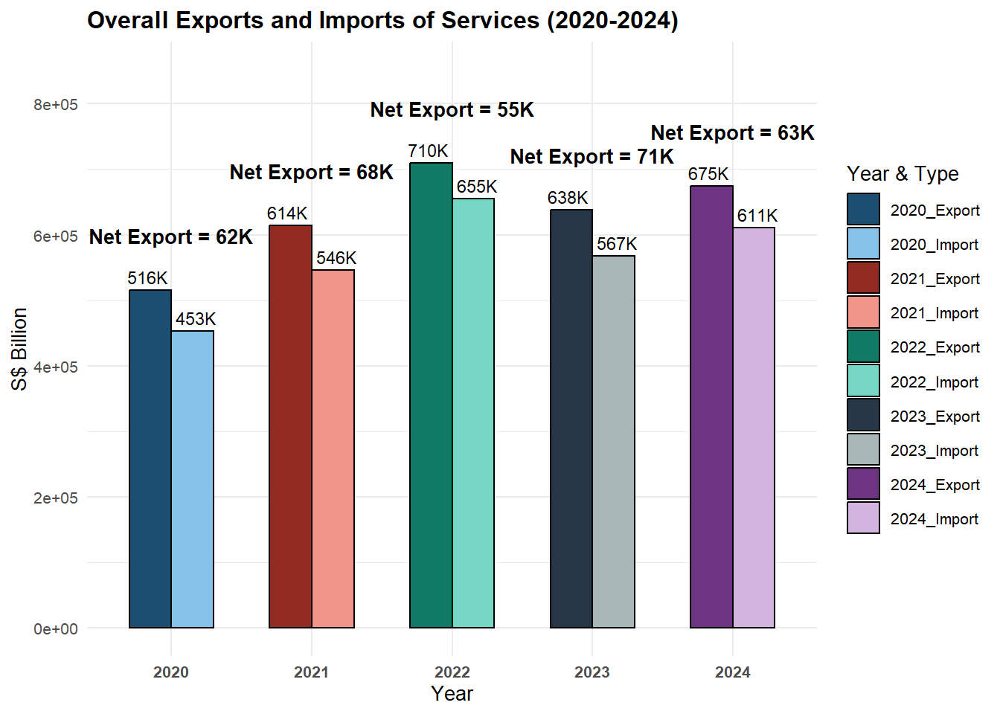
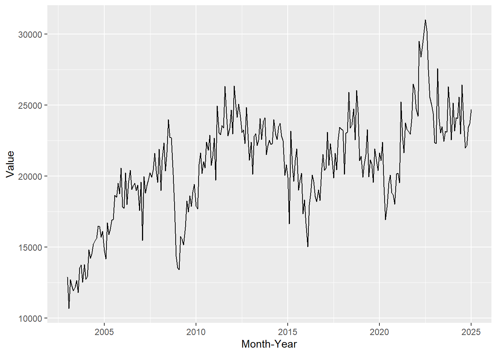
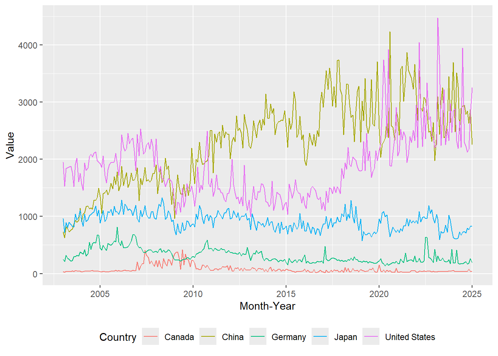
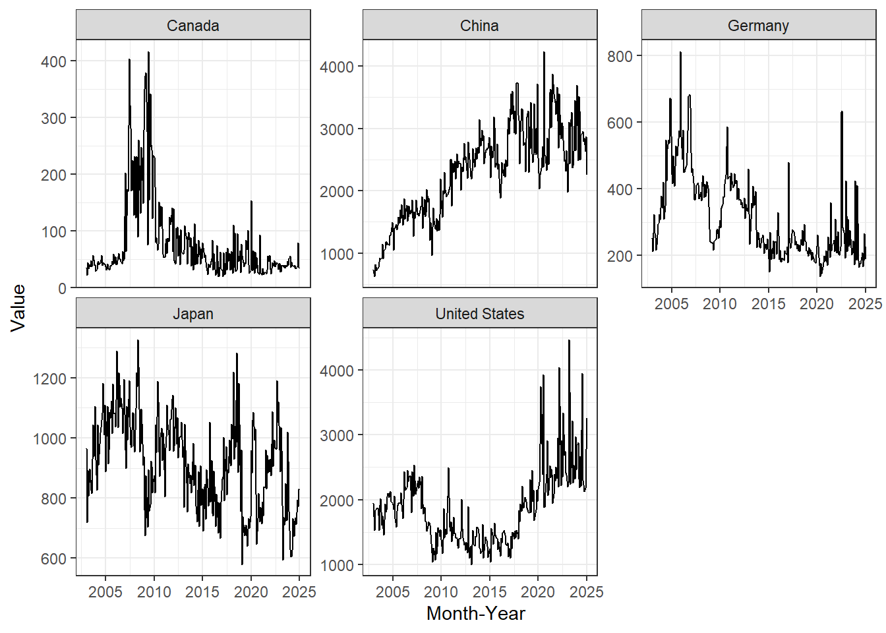
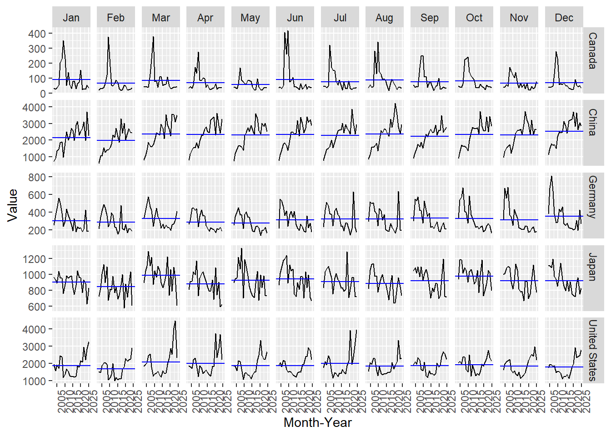
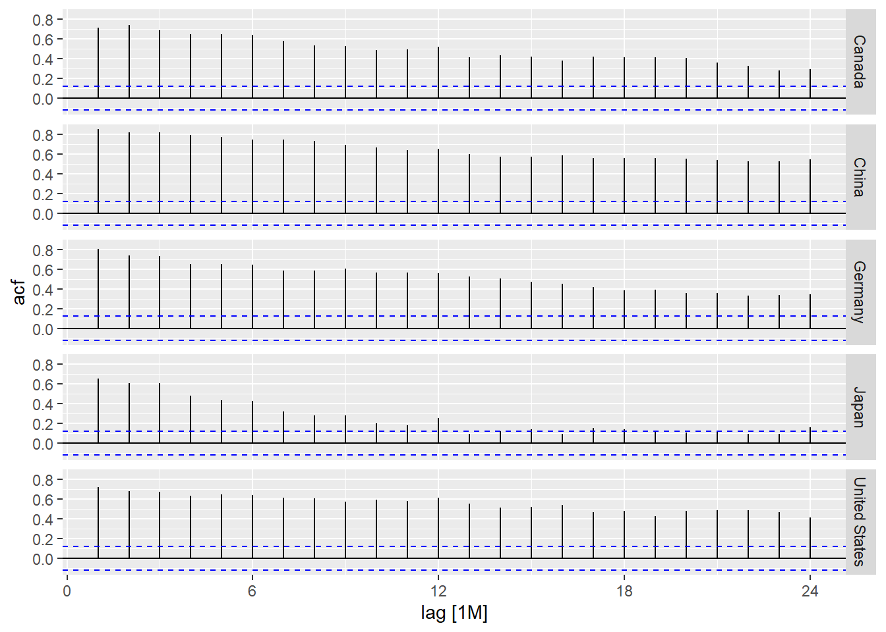
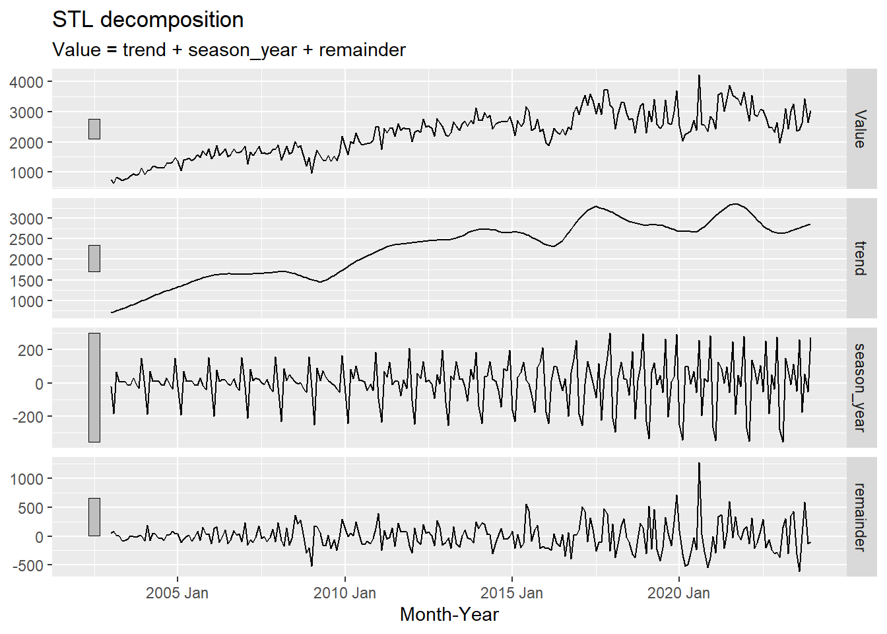

pacman::p_load(corrplot, readxl, ggiraph, ggplot2, tidyverse, ggthemes, tidyr,patchwork, ggstatsplot, plotly, dplyr)Take-Home_Ex02
Take Home Exercise 02 - Be Trade wise or Otherwise
Data Preparation
Import <- read_excel("data/Trade.xlsx",sheet = "T1", skip = 10)
Domestic_Export <- read_excel("data/Trade.xlsx",sheet = "T2", skip = 10)
Re_Export <- read_excel("data/Trade.xlsx",sheet = "T3", skip = 10)Using ‘read_excel’ from ‘readxl’ package can allow us to split the excel sheets. Also, since the ‘Trade.xlsx’ file contains 4 sheets as well as the first 10 row is description therefore, I skip the first 10 rows
colnames(Import) [1] "Data Series" "2025 Jan" "2024 Dec" "2024 Nov" "2024 Oct"
[6] "2024 Sep" "2024 Aug" "2024 Jul" "2024 Jun" "2024 May"
[11] "2024 Apr" "2024 Mar" "2024 Feb" "2024 Jan" "2023 Dec"
[16] "2023 Nov" "2023 Oct" "2023 Sep" "2023 Aug" "2023 Jul"
[21] "2023 Jun" "2023 May" "2023 Apr" "2023 Mar" "2023 Feb"
[26] "2023 Jan" "2022 Dec" "2022 Nov" "2022 Oct" "2022 Sep"
[31] "2022 Aug" "2022 Jul" "2022 Jun" "2022 May" "2022 Apr"
[36] "2022 Mar" "2022 Feb" "2022 Jan" "2021 Dec" "2021 Nov"
[41] "2021 Oct" "2021 Sep" "2021 Aug" "2021 Jul" "2021 Jun"
[46] "2021 May" "2021 Apr" "2021 Mar" "2021 Feb" "2021 Jan"
[51] "2020 Dec" "2020 Nov" "2020 Oct" "2020 Sep" "2020 Aug"
[56] "2020 Jul" "2020 Jun" "2020 May" "2020 Apr" "2020 Mar"
[61] "2020 Feb" "2020 Jan" "2019 Dec" "2019 Nov" "2019 Oct"
[66] "2019 Sep" "2019 Aug" "2019 Jul" "2019 Jun" "2019 May"
[71] "2019 Apr" "2019 Mar" "2019 Feb" "2019 Jan" "2018 Dec"
[76] "2018 Nov" "2018 Oct" "2018 Sep" "2018 Aug" "2018 Jul"
[81] "2018 Jun" "2018 May" "2018 Apr" "2018 Mar" "2018 Feb"
[86] "2018 Jan" "2017 Dec" "2017 Nov" "2017 Oct" "2017 Sep"
[91] "2017 Aug" "2017 Jul" "2017 Jun" "2017 May" "2017 Apr"
[96] "2017 Mar" "2017 Feb" "2017 Jan" "2016 Dec" "2016 Nov"
[101] "2016 Oct" "2016 Sep" "2016 Aug" "2016 Jul" "2016 Jun"
[106] "2016 May" "2016 Apr" "2016 Mar" "2016 Feb" "2016 Jan"
[111] "2015 Dec" "2015 Nov" "2015 Oct" "2015 Sep" "2015 Aug"
[116] "2015 Jul" "2015 Jun" "2015 May" "2015 Apr" "2015 Mar"
[121] "2015 Feb" "2015 Jan" "2014 Dec" "2014 Nov" "2014 Oct"
[126] "2014 Sep" "2014 Aug" "2014 Jul" "2014 Jun" "2014 May"
[131] "2014 Apr" "2014 Mar" "2014 Feb" "2014 Jan" "2013 Dec"
[136] "2013 Nov" "2013 Oct" "2013 Sep" "2013 Aug" "2013 Jul"
[141] "2013 Jun" "2013 May" "2013 Apr" "2013 Mar" "2013 Feb"
[146] "2013 Jan" "2012 Dec" "2012 Nov" "2012 Oct" "2012 Sep"
[151] "2012 Aug" "2012 Jul" "2012 Jun" "2012 May" "2012 Apr"
[156] "2012 Mar" "2012 Feb" "2012 Jan" "2011 Dec" "2011 Nov"
[161] "2011 Oct" "2011 Sep" "2011 Aug" "2011 Jul" "2011 Jun"
[166] "2011 May" "2011 Apr" "2011 Mar" "2011 Feb" "2011 Jan"
[171] "2010 Dec" "2010 Nov" "2010 Oct" "2010 Sep" "2010 Aug"
[176] "2010 Jul" "2010 Jun" "2010 May" "2010 Apr" "2010 Mar"
[181] "2010 Feb" "2010 Jan" "2009 Dec" "2009 Nov" "2009 Oct"
[186] "2009 Sep" "2009 Aug" "2009 Jul" "2009 Jun" "2009 May"
[191] "2009 Apr" "2009 Mar" "2009 Feb" "2009 Jan" "2008 Dec"
[196] "2008 Nov" "2008 Oct" "2008 Sep" "2008 Aug" "2008 Jul"
[201] "2008 Jun" "2008 May" "2008 Apr" "2008 Mar" "2008 Feb"
[206] "2008 Jan" "2007 Dec" "2007 Nov" "2007 Oct" "2007 Sep"
[211] "2007 Aug" "2007 Jul" "2007 Jun" "2007 May" "2007 Apr"
[216] "2007 Mar" "2007 Feb" "2007 Jan" "2006 Dec" "2006 Nov"
[221] "2006 Oct" "2006 Sep" "2006 Aug" "2006 Jul" "2006 Jun"
[226] "2006 May" "2006 Apr" "2006 Mar" "2006 Feb" "2006 Jan"
[231] "2005 Dec" "2005 Nov" "2005 Oct" "2005 Sep" "2005 Aug"
[236] "2005 Jul" "2005 Jun" "2005 May" "2005 Apr" "2005 Mar"
[241] "2005 Feb" "2005 Jan" "2004 Dec" "2004 Nov" "2004 Oct"
[246] "2004 Sep" "2004 Aug" "2004 Jul" "2004 Jun" "2004 May"
[251] "2004 Apr" "2004 Mar" "2004 Feb" "2004 Jan" "2003 Dec"
[256] "2003 Nov" "2003 Oct" "2003 Sep" "2003 Aug" "2003 Jul"
[261] "2003 Jun" "2003 May" "2003 Apr" "2003 Mar" "2003 Feb"
[266] "2003 Jan" colnames(Domestic_Export) [1] "Data Series" "2025 Jan" "2024 Dec" "2024 Nov" "2024 Oct"
[6] "2024 Sep" "2024 Aug" "2024 Jul" "2024 Jun" "2024 May"
[11] "2024 Apr" "2024 Mar" "2024 Feb" "2024 Jan" "2023 Dec"
[16] "2023 Nov" "2023 Oct" "2023 Sep" "2023 Aug" "2023 Jul"
[21] "2023 Jun" "2023 May" "2023 Apr" "2023 Mar" "2023 Feb"
[26] "2023 Jan" "2022 Dec" "2022 Nov" "2022 Oct" "2022 Sep"
[31] "2022 Aug" "2022 Jul" "2022 Jun" "2022 May" "2022 Apr"
[36] "2022 Mar" "2022 Feb" "2022 Jan" "2021 Dec" "2021 Nov"
[41] "2021 Oct" "2021 Sep" "2021 Aug" "2021 Jul" "2021 Jun"
[46] "2021 May" "2021 Apr" "2021 Mar" "2021 Feb" "2021 Jan"
[51] "2020 Dec" "2020 Nov" "2020 Oct" "2020 Sep" "2020 Aug"
[56] "2020 Jul" "2020 Jun" "2020 May" "2020 Apr" "2020 Mar"
[61] "2020 Feb" "2020 Jan" "2019 Dec" "2019 Nov" "2019 Oct"
[66] "2019 Sep" "2019 Aug" "2019 Jul" "2019 Jun" "2019 May"
[71] "2019 Apr" "2019 Mar" "2019 Feb" "2019 Jan" "2018 Dec"
[76] "2018 Nov" "2018 Oct" "2018 Sep" "2018 Aug" "2018 Jul"
[81] "2018 Jun" "2018 May" "2018 Apr" "2018 Mar" "2018 Feb"
[86] "2018 Jan" "2017 Dec" "2017 Nov" "2017 Oct" "2017 Sep"
[91] "2017 Aug" "2017 Jul" "2017 Jun" "2017 May" "2017 Apr"
[96] "2017 Mar" "2017 Feb" "2017 Jan" "2016 Dec" "2016 Nov"
[101] "2016 Oct" "2016 Sep" "2016 Aug" "2016 Jul" "2016 Jun"
[106] "2016 May" "2016 Apr" "2016 Mar" "2016 Feb" "2016 Jan"
[111] "2015 Dec" "2015 Nov" "2015 Oct" "2015 Sep" "2015 Aug"
[116] "2015 Jul" "2015 Jun" "2015 May" "2015 Apr" "2015 Mar"
[121] "2015 Feb" "2015 Jan" "2014 Dec" "2014 Nov" "2014 Oct"
[126] "2014 Sep" "2014 Aug" "2014 Jul" "2014 Jun" "2014 May"
[131] "2014 Apr" "2014 Mar" "2014 Feb" "2014 Jan" "2013 Dec"
[136] "2013 Nov" "2013 Oct" "2013 Sep" "2013 Aug" "2013 Jul"
[141] "2013 Jun" "2013 May" "2013 Apr" "2013 Mar" "2013 Feb"
[146] "2013 Jan" "2012 Dec" "2012 Nov" "2012 Oct" "2012 Sep"
[151] "2012 Aug" "2012 Jul" "2012 Jun" "2012 May" "2012 Apr"
[156] "2012 Mar" "2012 Feb" "2012 Jan" "2011 Dec" "2011 Nov"
[161] "2011 Oct" "2011 Sep" "2011 Aug" "2011 Jul" "2011 Jun"
[166] "2011 May" "2011 Apr" "2011 Mar" "2011 Feb" "2011 Jan"
[171] "2010 Dec" "2010 Nov" "2010 Oct" "2010 Sep" "2010 Aug"
[176] "2010 Jul" "2010 Jun" "2010 May" "2010 Apr" "2010 Mar"
[181] "2010 Feb" "2010 Jan" "2009 Dec" "2009 Nov" "2009 Oct"
[186] "2009 Sep" "2009 Aug" "2009 Jul" "2009 Jun" "2009 May"
[191] "2009 Apr" "2009 Mar" "2009 Feb" "2009 Jan" "2008 Dec"
[196] "2008 Nov" "2008 Oct" "2008 Sep" "2008 Aug" "2008 Jul"
[201] "2008 Jun" "2008 May" "2008 Apr" "2008 Mar" "2008 Feb"
[206] "2008 Jan" "2007 Dec" "2007 Nov" "2007 Oct" "2007 Sep"
[211] "2007 Aug" "2007 Jul" "2007 Jun" "2007 May" "2007 Apr"
[216] "2007 Mar" "2007 Feb" "2007 Jan" "2006 Dec" "2006 Nov"
[221] "2006 Oct" "2006 Sep" "2006 Aug" "2006 Jul" "2006 Jun"
[226] "2006 May" "2006 Apr" "2006 Mar" "2006 Feb" "2006 Jan"
[231] "2005 Dec" "2005 Nov" "2005 Oct" "2005 Sep" "2005 Aug"
[236] "2005 Jul" "2005 Jun" "2005 May" "2005 Apr" "2005 Mar"
[241] "2005 Feb" "2005 Jan" "2004 Dec" "2004 Nov" "2004 Oct"
[246] "2004 Sep" "2004 Aug" "2004 Jul" "2004 Jun" "2004 May"
[251] "2004 Apr" "2004 Mar" "2004 Feb" "2004 Jan" "2003 Dec"
[256] "2003 Nov" "2003 Oct" "2003 Sep" "2003 Aug" "2003 Jul"
[261] "2003 Jun" "2003 May" "2003 Apr" "2003 Mar" "2003 Feb"
[266] "2003 Jan" colnames(Re_Export) [1] "Data Series" "2025 Jan" "2024 Dec" "2024 Nov" "2024 Oct"
[6] "2024 Sep" "2024 Aug" "2024 Jul" "2024 Jun" "2024 May"
[11] "2024 Apr" "2024 Mar" "2024 Feb" "2024 Jan" "2023 Dec"
[16] "2023 Nov" "2023 Oct" "2023 Sep" "2023 Aug" "2023 Jul"
[21] "2023 Jun" "2023 May" "2023 Apr" "2023 Mar" "2023 Feb"
[26] "2023 Jan" "2022 Dec" "2022 Nov" "2022 Oct" "2022 Sep"
[31] "2022 Aug" "2022 Jul" "2022 Jun" "2022 May" "2022 Apr"
[36] "2022 Mar" "2022 Feb" "2022 Jan" "2021 Dec" "2021 Nov"
[41] "2021 Oct" "2021 Sep" "2021 Aug" "2021 Jul" "2021 Jun"
[46] "2021 May" "2021 Apr" "2021 Mar" "2021 Feb" "2021 Jan"
[51] "2020 Dec" "2020 Nov" "2020 Oct" "2020 Sep" "2020 Aug"
[56] "2020 Jul" "2020 Jun" "2020 May" "2020 Apr" "2020 Mar"
[61] "2020 Feb" "2020 Jan" "2019 Dec" "2019 Nov" "2019 Oct"
[66] "2019 Sep" "2019 Aug" "2019 Jul" "2019 Jun" "2019 May"
[71] "2019 Apr" "2019 Mar" "2019 Feb" "2019 Jan" "2018 Dec"
[76] "2018 Nov" "2018 Oct" "2018 Sep" "2018 Aug" "2018 Jul"
[81] "2018 Jun" "2018 May" "2018 Apr" "2018 Mar" "2018 Feb"
[86] "2018 Jan" "2017 Dec" "2017 Nov" "2017 Oct" "2017 Sep"
[91] "2017 Aug" "2017 Jul" "2017 Jun" "2017 May" "2017 Apr"
[96] "2017 Mar" "2017 Feb" "2017 Jan" "2016 Dec" "2016 Nov"
[101] "2016 Oct" "2016 Sep" "2016 Aug" "2016 Jul" "2016 Jun"
[106] "2016 May" "2016 Apr" "2016 Mar" "2016 Feb" "2016 Jan"
[111] "2015 Dec" "2015 Nov" "2015 Oct" "2015 Sep" "2015 Aug"
[116] "2015 Jul" "2015 Jun" "2015 May" "2015 Apr" "2015 Mar"
[121] "2015 Feb" "2015 Jan" "2014 Dec" "2014 Nov" "2014 Oct"
[126] "2014 Sep" "2014 Aug" "2014 Jul" "2014 Jun" "2014 May"
[131] "2014 Apr" "2014 Mar" "2014 Feb" "2014 Jan" "2013 Dec"
[136] "2013 Nov" "2013 Oct" "2013 Sep" "2013 Aug" "2013 Jul"
[141] "2013 Jun" "2013 May" "2013 Apr" "2013 Mar" "2013 Feb"
[146] "2013 Jan" "2012 Dec" "2012 Nov" "2012 Oct" "2012 Sep"
[151] "2012 Aug" "2012 Jul" "2012 Jun" "2012 May" "2012 Apr"
[156] "2012 Mar" "2012 Feb" "2012 Jan" "2011 Dec" "2011 Nov"
[161] "2011 Oct" "2011 Sep" "2011 Aug" "2011 Jul" "2011 Jun"
[166] "2011 May" "2011 Apr" "2011 Mar" "2011 Feb" "2011 Jan"
[171] "2010 Dec" "2010 Nov" "2010 Oct" "2010 Sep" "2010 Aug"
[176] "2010 Jul" "2010 Jun" "2010 May" "2010 Apr" "2010 Mar"
[181] "2010 Feb" "2010 Jan" "2009 Dec" "2009 Nov" "2009 Oct"
[186] "2009 Sep" "2009 Aug" "2009 Jul" "2009 Jun" "2009 May"
[191] "2009 Apr" "2009 Mar" "2009 Feb" "2009 Jan" "2008 Dec"
[196] "2008 Nov" "2008 Oct" "2008 Sep" "2008 Aug" "2008 Jul"
[201] "2008 Jun" "2008 May" "2008 Apr" "2008 Mar" "2008 Feb"
[206] "2008 Jan" "2007 Dec" "2007 Nov" "2007 Oct" "2007 Sep"
[211] "2007 Aug" "2007 Jul" "2007 Jun" "2007 May" "2007 Apr"
[216] "2007 Mar" "2007 Feb" "2007 Jan" "2006 Dec" "2006 Nov"
[221] "2006 Oct" "2006 Sep" "2006 Aug" "2006 Jul" "2006 Jun"
[226] "2006 May" "2006 Apr" "2006 Mar" "2006 Feb" "2006 Jan"
[231] "2005 Dec" "2005 Nov" "2005 Oct" "2005 Sep" "2005 Aug"
[236] "2005 Jul" "2005 Jun" "2005 May" "2005 Apr" "2005 Mar"
[241] "2005 Feb" "2005 Jan" "2004 Dec" "2004 Nov" "2004 Oct"
[246] "2004 Sep" "2004 Aug" "2004 Jul" "2004 Jun" "2004 May"
[251] "2004 Apr" "2004 Mar" "2004 Feb" "2004 Jan" "2003 Dec"
[256] "2003 Nov" "2003 Oct" "2003 Sep" "2003 Aug" "2003 Jul"
[261] "2003 Jun" "2003 May" "2003 Apr" "2003 Mar" "2003 Feb"
[266] "2003 Jan" From the table structure, the column names are organized by year and month, such as “2024 Jan”, “2024 Dec”, “2023 Nov”, indicating that the data is recorded in a time-series format, with each column representing the export data for a specific month. To conduct an annual summary analysis, all monthly data needs to be converted to a long format, where Year becomes a separate column, and the month information is removed, keeping only the year. This transformation allows for the aggregation of data from the same year, enabling the calculation of total annual exports and providing a clearer view of trade trends over time.
Data visualization 1

This is the first data visualisation posted on the page on statistic Singapore. It is the total merchandise trade for Singapore between the year 2020 and 2024. There are both pros and cons on this visualisation:
The biggest advantage of this visualization is its distinct color differentiation, with each year represented by a different color, allowing readers to quickly identify and compare yearly trends. This color scheme effectively highlights annual variations, making the overall trade trends clear at a glance. Additionally, the use of horizontal bar charts aligns with the natural left-to-right reading habit, making it easier to visually compare total trade values across different years for better analysis.
Despite its readability in terms of color and layout, this chart has some limitations. First, it lacks clear labels, making some information less intuitive and harder for readers to quickly locate specific data or gain deeper insights into the trade structure. Second, this visualization is not interactive, preventing users from freely filtering or exploring the data in greater detail, such as breaking it down by industry category or examining specific changes. This static presentation limits the depth of information and reduces the flexibility of data analysis.
Re-sketches and make-over
First we need to combine the sheets together to get the total export in each year.
colnames(Domestic_Export)[1] <- "Region"
colnames(Re_Export)[1] <- "Region"
Domestic_Total <- Domestic_Export %>%
filter(Region == "Total All Markets")
Re_Export_Total <- Re_Export %>%
filter(Region == "Total All Markets")
Domestic_long <- Domestic_Total %>%
pivot_longer(cols = -Region, names_to = "Year", values_to = "Domestic_Export_Value")
Re_Export_long <- Re_Export_Total %>%
pivot_longer(cols = -Region, names_to = "Year", values_to = "Re_Export_Value")
Export_Total <- full_join(Domestic_long, Re_Export_long, by = "Year")
Export_Total <- Export_Total %>%
mutate(Year = as.numeric(substr(Year, 1, 4)))
Export_Total <- Export_Total %>%
mutate(across(c(Domestic_Export_Value, Re_Export_Value), ~ as.numeric(gsub(",", "", .))))
Total_Exports <- Export_Total %>%
group_by(Year) %>%
summarise(Total_Export = sum(Domestic_Export_Value, na.rm = TRUE) + sum(Re_Export_Value, na.rm = TRUE))
print(Total_Exports)# A tibble: 23 × 2
Year Total_Export
<dbl> <dbl>
1 2003 281147.
2 2004 336776
3 2005 383683.
4 2006 434056.
5 2007 454087.
6 2008 480855.
7 2009 392926.
8 2010 480710.
9 2011 523270.
10 2012 519354.
# ℹ 13 more rowsImport_Total <- Import %>%
filter(`Data Series` == "Total All Markets") %>%
pivot_longer(cols = -`Data Series`, names_to = "Year", values_to = "Import_Value") %>%
mutate(Year = as.numeric(substr(Year, 1, 4))) %>%
group_by(Year) %>%
summarise(Total_Import = sum(Import_Value, na.rm = TRUE))
print(Import_Total)# A tibble: 23 × 2
Year Total_Import
<dbl> <dbl>
1 2003 238070.
2 2004 294178.
3 2005 334314.
4 2006 380842.
5 2007 398404
6 2008 455460.
7 2009 358374.
8 2010 426326.
9 2011 468288.
10 2012 482190.
# ℹ 13 more rowsFirst, we read the T2 (Domestic Export) and T3 (Re-Export) sheets from the Trade.xlsx file, skipping the first 10 rows of description. Then, we filtered the data to keep only the “Total All Markets” row, as it represents Singapore’s overall export figures.
Next, we transformed the data into long format, converting monthly values into a single column so that Year becomes a separate variable, making it easier to analyze. Since the original data contains months like “Jan” and “Feb,” we extracted only the first four characters to keep only the year (e.g., 2024, 2023, 2022).
To ensure accurate calculations, we converted the export values from character format to numeric, removing any commas to prevent errors. After data cleaning, we aggregated the exports by year, calculating Total Export = Domestic Export + Re-Export to obtain the annual total export values.
Finally, we generated a Total_Exports table containing Year and Total_Export columns. This dataset can now be used to visualize the annual export trends, providing insights into Singapore’s trade performance over the years.
Total_Exports <- Total_Exports %>%
mutate(Year = as.integer(Year))
Filtered_Total_Exports <- Total_Exports %>%
filter(Year >= 2020 & Year <= 2024)
Filtered_Total_Imports <- Import_Total %>%
filter(Year >= 2020 & Year <= 2024)
format_km <- function(x) {
ifelse(x >= 1e6, paste0(round(x / 1e6, 0), "M"),
paste0(round(x / 1e3, 0), "K"))
}Export_BarChart <- ggplot(Filtered_Total_Exports, aes(x = as.factor(Year), y = Total_Export, fill = as.factor(Year))) +
geom_col(color = "black", width = 0.6) +
geom_text(aes(label = format_km(Total_Export)), vjust = -1.5, size = 5, fontface = "bold") +
scale_y_continuous(labels = format_km) +
scale_fill_manual(values = c("2020" = "#FF9999", "2021" = "#69b3a2", "2022" = "#FFCC00", "2023" = "#3399FF", "2024" = "#9933FF")) +
labs(title = "Singapore Export (2020-2024)",
x = "Year",
y = "Total Export (S$ Billion)",
fill = "Year") +
theme_minimal(base_size = 14) +
theme(
plot.title = element_text(size = 16, face = "bold"),
axis.text.x = element_text(face = "bold", family = "Comic Sans MS")
)
Import_BarChart <- ggplot(Filtered_Total_Imports, aes(x = as.factor(Year), y = Total_Import, fill = as.factor(Year))) +
geom_col(color = "black", width = 0.6) +
geom_text(aes(label = format_km(Total_Import)), vjust = -1.5, size = 5, fontface = "bold") +
scale_y_continuous(labels = format_km) +
scale_fill_manual(values = c("2020" = "#FF9999", "2021" = "#69b3a2", "2022" = "#FFCC00", "2023" = "#3399FF", "2024" = "#9933FF")) +
labs(title = "Singapore Import (2020-2024)",
x = "Year",
y = "Total Import (S$ Billion)",
fill = "Year") +
theme_minimal(base_size = 14) +
theme(
plot.title = element_text(size = 16, face = "bold"),
axis.text.x = element_text(face = "bold", family = "Comic Sans MS")
)
Export_Interactive <- ggplotly(Export_BarChart)
Import_Interactive <- ggplotly(Import_BarChart)
Export_InteractiveImport_InteractiveI optimized the original statistical chart to make Singapore’s import and export data from 2020 to 2024 clearer and more intuitive. First, total exports and total imports were extracted from the dataset and aggregated by year to ensure data consistency. Then, two separate bar charts were created, with different colors used to distinguish each year, making trends more apparent. The numerical format was optimized using K (thousands) notation to avoid visual clutter, and ggplotly was applied to enhance interactivity, allowing users to hover over the chart for precise values. The optimized visualization improves readability, highlights trends more effectively, and enhances interactivity, making the analysis of Singapore’s trade data more efficient.
Data visualization 2

This chart effectively highlights the average levels of imports and exports using a white center point, allowing users to quickly assess trade balance. Additionally, different colors are used to distinguish countries, with country names directly labeled on the chart. This makes key trading partners easily identifiable, reducing reliance on additional legends and improving readability.
The chart is overly complex, requiring users to take time analyzing bubble sizes and positions to understand the data, which reduces intuitiveness. Specific import and export values are not directly displayed, forcing users to hover for details instead of seeing trade figures at a glance. The legend colors for imports and exports are quite similar, which, especially on a light background, may make it harder for users to quickly differentiate between import and export areas, reducing the efficiency of information delivery.
Re-sketches and make-over
Import$`Data Series` <- trimws(Import$`Data Series`)
Import_2024 <- Import %>% select(`Data Series`, starts_with("2024")) %>%
group_by(`Data Series`) %>%
summarise(Total_Imports_2024 = sum(across(starts_with("2024")), na.rm = TRUE)) %>%
distinct()
Domestic_Export$Region <- trimws(Domestic_Export$Region)
Domestic_Export_2024 <- Domestic_Export %>% select(Region, starts_with("2024")) %>%
group_by(Region) %>%
summarise(Total_Domestic_Exports_2024 = sum(across(starts_with("2024")), na.rm = TRUE)) %>%
distinct()
Re_Export$Region <- trimws(Re_Export$Region)
Re_Export_2024 <- Re_Export %>% select(Region, starts_with("2024")) %>%
group_by(Region) %>%
summarise(Total_Re_Exports_2024 = sum(across(starts_with("2024")), na.rm = TRUE)) %>%
distinct()
Trade_2024 <- Import_2024 %>%
rename(Region = `Data Series`) %>%
left_join(Domestic_Export_2024, by = "Region") %>%
left_join(Re_Export_2024, by = "Region")
Trade_2024[ , 2:ncol(Trade_2024)] <- lapply(Trade_2024[ , 2:ncol(Trade_2024)], function(x) ifelse(is.na(x), 0, x))
Trade_2024 <- Trade_2024 %>%
mutate(
Total_Exports_2024 = Total_Domestic_Exports_2024 + Total_Re_Exports_2024,
Trade_Volume_2024 = Total_Imports_2024 + Total_Exports_2024
)
major_partners <- c("United States", "China", "European Union", "Malaysia", "Taiwan",
"Hong Kong", "Japan", "Korea, Rep Of", "Indonesia", "Thailand")
Trade_2024 <- Trade_2024 %>% filter(Region %in% major_partners)
EDA2 <- ggplot(Trade_2024, aes(x = Total_Imports_2024, y = Total_Exports_2024,
size = Trade_Volume_2024, color = Trade_Volume_2024)) +
geom_point(alpha = 0.7) +
geom_text(aes(label = Region),
vjust = 1.5, size = 5, color = "black", fontface = "bold") +
scale_size(range = c(5, 20)) +
scale_color_gradient(low = "#add8e6", high = "#00008b") +
theme_minimal() +
labs(title = "Merchandise Trade Performance with Major Trading Partners (2024)",
x = "Imports (S$ Bil)", y = "Exports (S$ Bil)",
size = "Trade Volume", color = "Trade Volume") +
theme(legend.position = "bottom")
ggplotly(EDA2)The new version of the visualization is more intuitive and efficient, enhancing both readability and user interaction. First, the color scheme was optimized by using a gradient from light blue to dark blue, allowing bubble colors to directly reflect trade volume—the larger the trade amount, the darker the color—enhancing the visual hierarchy of the data. Additionally, country names were standardized in black to ensure clarity against different backgrounds without interference from bubble colors. Unnecessary text labels were removed to make the chart cleaner and reduce information overload, while interactive features remain, allowing users to hover for detailed data. Overall, this version aligns better with best practices in data visualization, enabling users to quickly grasp the import and export performance of major trade partners without needing to interpret complex legends or labels.
Data visualization 3

This chart has a creative design, using different colors for each year, making it more visually engaging and allowing viewers to quickly distinguish between years. Additionally, the export and import values are clearly labeled on the bars, eliminating the need for estimation and improving data clarity and readability.
The color contrast between exports and imports is not strong enough, making it difficult to differentiate them quickly in some cases. Using higher-contrast colors could enhance readability. Furthermore, while the chart currently highlights total values, net export (Net Export = Exports - Imports) might be a more valuable metric, as it directly reflects a country’s trade surplus or deficit rather than just the total import and export amounts.
Re-sketches and make-over
Net_Export_df <- left_join(Filtered_Total_Exports, Filtered_Total_Imports, by = "Year") %>%
mutate(Net_Export = Total_Export - Total_Import) %>%
pivot_longer(cols = c(Total_Export, Total_Import), names_to = "Type", values_to = "Value")
Net_Export_df# A tibble: 10 × 4
Year Net_Export Type Value
<dbl> <dbl> <chr> <dbl>
1 2020 62177. Total_Export 515645.
2 2020 62177. Total_Import 453467.
3 2021 68199. Total_Export 614081
4 2021 68199. Total_Import 545882.
5 2022 54531. Total_Export 709967.
6 2022 54531. Total_Import 655436
7 2023 71084. Total_Export 638403.
8 2023 71084. Total_Import 567319.
9 2024 63146. Total_Export 674505
10 2024 63146. Total_Import 611360.format_k <- function(x) {
paste0(round(x / 1e3, 0), "K")
}
y_max <- max(Net_Export_df$Value) * 1.2 # **增加 20% 作为上限**
export_import_colors <- c(
"2020_Export" = "#1B4F72", "2020_Import" = "#85C1E9",
"2021_Export" = "#922B21", "2021_Import" = "#F1948A",
"2022_Export" = "#117A65", "2022_Import" = "#76D7C4",
"2023_Export" = "#283747", "2023_Import" = "#AAB7B8",
"2024_Export" = "#6C3483", "2024_Import" = "#D2B4DE"
)
Net_Export_df <- Net_Export_df %>%
mutate(Year_Type = paste0(Year, "_", ifelse(Type == "Total_Export", "Export", "Import")))
p <- ggplot(Net_Export_df, aes(x = as.factor(Year), y = Value, fill = Year_Type)) +
geom_col(position = "dodge", width = 0.6, color = "black") +
geom_text(aes(label = format_k(Value)),
vjust = -0.5, size = 3, color = "black", position = position_dodge(0.7)) +
geom_text(data = Net_Export_df %>% filter(Type == "Total_Export"),
aes(x = as.factor(Year), y = Value + 50,
label = paste0("Net Export = ", format_k(Net_Export))),
vjust = -3, size = 3.5, fontface = "bold", color = "black") +
scale_fill_manual(values = export_import_colors) +
scale_y_continuous(limits = c(0, y_max)) +
labs(title = "Overall Exports and Imports of Services (2020-2024)",
x = "Year", y = "S$ Billion", fill = "Year & Type") +
theme_minimal(base_size = 10) +
theme(
plot.title = element_text(size = 12, face = "bold"),
axis.text.x = element_text(face = "bold"),
plot.margin = margin(5, 5, 5, 5)
)
print(p)
This chart is an improved version that enhances the contrast between exports (Export) and imports (Import), making the data more intuitive and easier to read. Additionally, the total (Total) value at the top has been replaced with net export (Net Export), providing a clearer view of the trade surplus during the 2020-2024 period. This adjustment helps in better understanding the economic situation of that time. The chart shows that exports consistently exceeded imports each year, indicating a trade surplus, which reflects strong economic performance over these years.
Time-series analysis
pacman::p_load(tidyverse, tsibble, feasts, fable, seasonal,dplyr,lubridate,readxl)Importing data
ts_data <- read_excel("data/Trade.xlsx", sheet = "Time_Series")
colnames(ts_data)[1] <- "Month-Year"
ts_data$`Month-Year` <- trimws(as.character(ts_data$`Month-Year`))
ts_data <- ts_data %>%
mutate(Year = substr(`Month-Year`, 1, 4),
Month = substr(`Month-Year`, 6, 8))
ts_data$`Month-Year` <- paste0("01-", ts_data$Month, "-", ts_data$Year)
ts_data$`Month-Year` <- dmy(ts_data$`Month-Year`)
ts_data <- ts_data %>% select(-Month, -Year)
head(ts_data)# A tibble: 6 × 161
`Month-Year` `Total All Markets` America `Antigua And Barbuda` Argentina
<date> <dbl> <dbl> <dbl> <dbl>
1 2025-01-01 24672 4263. 8.8 5.3
2 2024-12-01 23685. 3608. 7.1 6
3 2024-11-01 23439. 3129. 8.3 3.9
4 2024-10-01 22148. 2936. 7.7 6.4
5 2024-09-01 21967. 3294. 8.2 3
6 2024-08-01 23984 3448. 9.3 4.3
# ℹ 156 more variables: Bahamas <dbl>, Bermuda <dbl>, Brazil <dbl>,
# Canada <dbl>, Chile <dbl>, Colombia <dbl>, `Costa Rica` <dbl>, Cuba <dbl>,
# `Dominican Rep` <dbl>, Ecuador <dbl>, `El Salvador` <dbl>, Guatemala <dbl>,
# Guyana <dbl>, Honduras <dbl>, Jamaica <dbl>, Mexico <dbl>,
# `Netherlands Antilles` <dbl>, Panama <dbl>, Paraguay <dbl>, Peru <dbl>,
# `Puerto Rico` <dbl>, `St. Vincent And The Grenadines` <dbl>,
# `Trinidad And Tobago` <dbl>, `United States` <dbl>, …Visualizing Time-series Data
ts_longer <- ts_data %>%
pivot_longer(cols = -`Month-Year`, names_to = "Country", values_to = "Value")
ts_longer %>%
filter(Country == "Total All Markets") %>%
ggplot(aes(x = `Month-Year`, y = Value)) +
geom_line(size = 0.5)Warning: Using `size` aesthetic for lines was deprecated in ggplot2 3.4.0.
ℹ Please use `linewidth` instead.
Plotting multiple time-series data with ggplot2 methods
ts_longer %>%
filter(Country %in% c("China", "United States", "Germany","Japan","Canada")) %>%
ggplot(aes(x = `Month-Year`, y = Value, color = Country)) +
geom_line(size = 0.5) +
theme(legend.position = "bottom")
I have selected five countries (China, United States, Germany, Japan, Canada) to visualize their time-series data, showing trends over time using a multi-line plot.
In order to provide effective comparison, facet_wrap() of ggplot2 package is used to create small multiple line graph also known as trellis plot.
selected_countries <- c("China", "United States", "Germany", "Japan", "Canada")
ggplot(data = ts_longer %>% filter(Country %in% selected_countries),
aes(x = `Month-Year`, y = Value)) +
geom_line(size = 0.5) +
facet_wrap(~ Country, ncol = 3, scales = "free_y") +
theme_bw()
Visual Analysis of Time-series Data
tsibble_longer <- ts_longer %>%
mutate(`Month-Year` = yearmonth(`Month-Year`)) %>%
as_tsibble(index = `Month-Year`, key = Country)The original Month-Year was in Date format with a default day of “01”. This caused tsibble to misinterpret the data as daily instead of monthly. Converting it to yearmonth(Month-Year) ensured proper recognition of monthly data. This prevents duplicate values and allows gg_subseries() to function correctly.
tsibble_longer %>%
filter(Country %in% c("China", "United States", "Germany", "Japan","Canada")) %>%
gg_subseries(Value)
Single time series decomposition
tsibble_longer %>%
filter(Country %in% c("China", "United States", "Germany", "Japan","Canada")) %>%
ACF(Value) %>%
autoplot()
This plot represents the Autocorrelation Function (ACF) for each selected country (China, United States, Germany, Japan).
The x-axis (lag [1M]) shows the lag in months, indicating how past values influence future values.
The y-axis (acf) represents the correlation between the time series and its lagged values.
The black bars show the strength of correlation at different lags, while the blue dashed lines indicate significance thresholds.
High correlations at specific lags suggest seasonal patterns or trends in the data.
Visual Forecasting
china_ts <- tsibble_longer %>%
filter(Country == "China") %>%
mutate(Type = if_else(`Month-Year` >= yearmonth("2024-01"), "Hold-out", "Training"))
china_train <- china_ts %>%
filter(Type == "Training")china_train %>%
model(stl = STL(Value)) %>%
components() %>%
autoplot()
The dataset was first filtered to select only China’s data. A new variable, Type, was created to classify data as “Training” if it was before January 2024 and “Hold-out” otherwise. The training dataset was then extracted by keeping only the “Training” entries. Finally, an STL decomposition (Seasonal-Trend-Loess) was applied to break the time series into three components: trend, seasonal variation, and remainder (residual noise). The plot visualizes how these components evolve over time.
Conclusion
This analysis explored time-series data through visualization, decomposition, and initial forecasting. Multiple time series were plotted to observe trends, and single series decomposition helped identify patterns. While forecasting was introduced, a detailed seasonality analysis was not conducted. Further steps could include deeper seasonal pattern exploration for better insights.